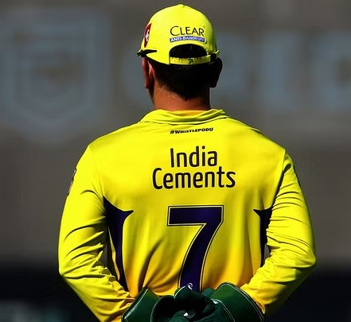

Mahendra Singh Dhoni; born 7 July 1981 is an Indian professional cricketer. He was captain of the Indian national team in limited-overs formats from 2007 to 2017 and in Test cricket from 2008 to 2014. Dhoni is widely considered one of the greatest cricket captains, wicket-keeper-batsman and finishers in the history of cricket. He plays as a right-handed wicket-keeper-batsman and is known for his calm captaincy and his ability to finish matches in tight situations. He is also the current captain of Chennai Super Kings in the Indian Premier League.
Early life
Dhoni was born in Ranchi, Bihar (now in Jharkhand) and hails from a Hindu Rajput family to parents from Uttarakhand. He is the youngest of three children of Pan Singh and Devaki Devi. His paternal village Lwali, is in Jainti Tehsil, Lamgara block of the Almora District of Uttarakhand. His parents moved from Uttarakhand to Ranchi, Jharkhand where his father worked as a pump operator in junior management position in MECON Colony situated in Doranda area in Ranchi. Unlike Dhoni, his uncle and cousins spell their surname "Dhauni" Previously Dhoni was the goalkeeper for his DAV Jawahar Vidya Mandir school's football team, but after seeing his goalkeeping skills, coach Keshav Ranjan Banerjee, one who inspired Dhoni to be a cricketer, picked him to play cricket for his school team. His exceptional wicketkeeping skills allowed him to become the regular wicketkeeper at the Commando Cricket Club (1995–1998). Based on his performance at club cricket, he was picked for the 1997/98 season Vinoo Mankad Trophy Under-16 Championship, where he performed well. From 2001 to 2003, Dhoni worked as a Travelling Ticket Examiner (TTE) at Kharagpur railway station under South Eastern Railway in Midnapore (W), a district in West Bengal.
Personal life
He married Sakshi Singh Rawat on 4 July 2010.
The wedding took place in Dehradun, one day after the couple got engaged. Dhoni and his wife have one daughter, Zeeva Dhoni.
Dhoni is an enthusiast of the Indian Army. While spending a day with the parachute regiment in Ranchi, Dhoni said, "Since childhood I wanted to join the Army. Seeing the soldiers, I thought one day I'll be the same".
He holds the post of vice-president marketing in India Cements Ltd. The company is headed by former BCCI president and IPL franchise Chennai Super Kings owner N. Srinivasan.
A movie was made based on Dhoni's life, from his childhood to the 2011 Cricket World Cup, titled M.S. Dhoni: The Untold Story, with Sushant Singh Rajput in the titular role was released on 29th September 2016 with critical and commercial success.
The MS Dhoni movie adeptly captured the remarkable journey of the cricket legend, showcasing his rise from a small-town enthusiast to an iconic captain. It skillfully highlighted his personal struggles, leadership finesse, and deep connection to the sport, offering an inspiring and comprehensive portrayal of his life.

I would go to war with MS Dhoni by my side.
- Gary Kirsten